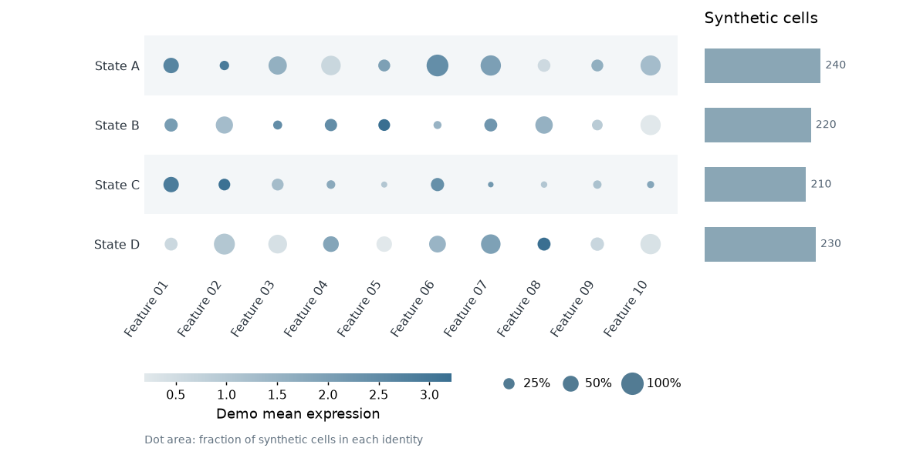
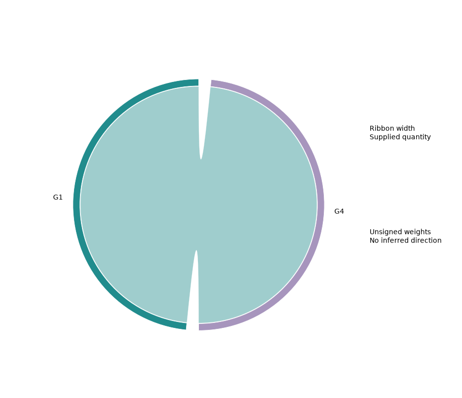
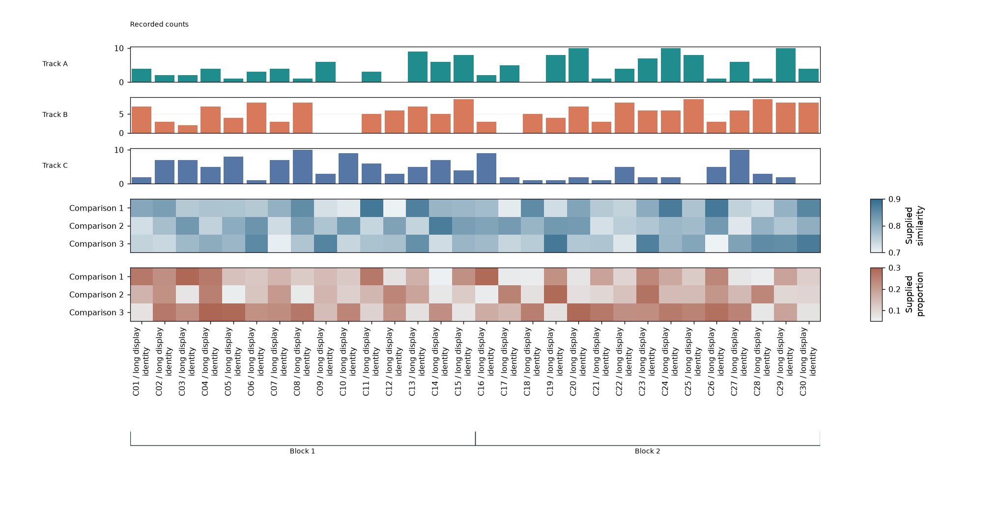
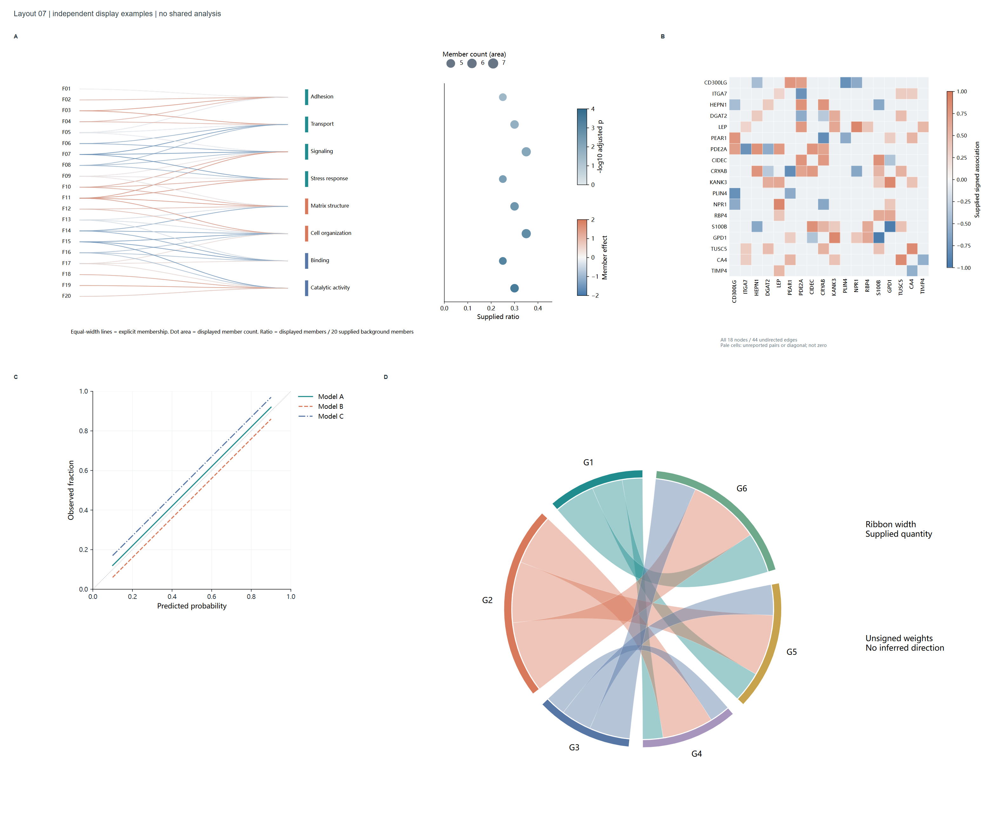

完整单图与扩展

96个完整视图：SVG、PDF、PNG、冻结TSV及原生FigureSpec。基础图型的有用扩展保留在同一体系。
90个合并基础图型，96个单图视图、261个数据量变体、48个完整面板布局。全部405份最终PNG已逐张屏幕自检；这些是明确虚构的软件与显示样例，不是科研发现或独立审美认证。
逐类来源、采用与舍弃 · 精确验收边界 · 最终导出与审阅哈希

96个完整视图：SVG、PDF、PNG、冻结TSV及原生FigureSpec。基础图型的有用扩展保留在同一体系。

87种图的有限输入检验：少量对象时也检查比例、语义和留白，避免退化图形。

87个长标签与宽度变体：图例、刻度、分块和不同数量保持可读。

87个较大数量变体：用矩阵、分面或阅读版保留信息。数量是有界的软件测试，非大规模科研计算。

48个完整布局：24组平衡排布及24组自定义列宽/跨列，覆盖全部单图视图。邻接不代表共同科学关系。